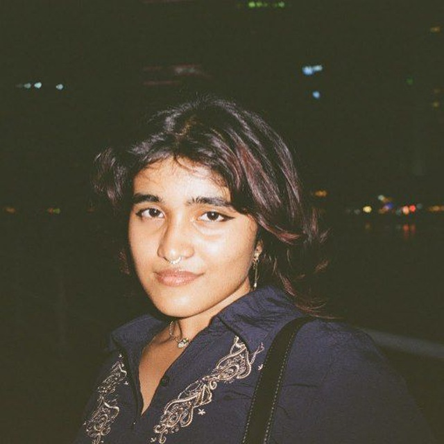

hi! im vishruti, a second year phd student and graduate assistant at the national university of singapore. my research interests lie primarily in on-body sensing and feedback mechanisms (sometimes coupled with reconfigurable computing). my current focus is on creating wearable computational devices that support learning in tertiary education. this is very much an interdisciplinary journey, i like to draw from cognitive science, behavioural science, education, and neuroscience to shape how i think about these systems.
loading publications...